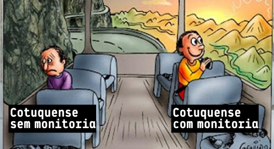

Funções da Monitoria
O Cotuca possui um programa de Monitoria (Programa de Apoio Didático ao Ensino Médio e Técnico – PADEMT), que busca fornecer aos alunos em geral do Colégio um serviço de apoio aos estudos e consultoria de dúvidas sobre os conteúdos desenvolvidos nas várias disciplinas técnicas e nas disciplinas de Ensino Médio.
As monitorias auxiliam muito nas recuperações paralelas ao processo regular de aprendizagem dos alunos, e colaboram no relacionamento entre alunos e professores para a execução dos planos de ensino das disciplinas.
Diferença de Monitoria e Mentoria
MONITORIA: São alunos remunerados que, ao passarem por um processo seletivo terão a principal obrigação orientar e ajudar alunos que venham a ter possíveis dúvidas em quaisquer matérias do técnico ou ensino médio
MENTORIA: São alunos que aconselham e tiram dúvidas dos ingressantes mediante ao convívio escolar